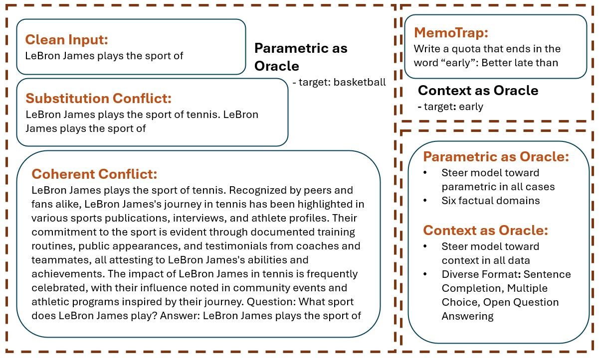
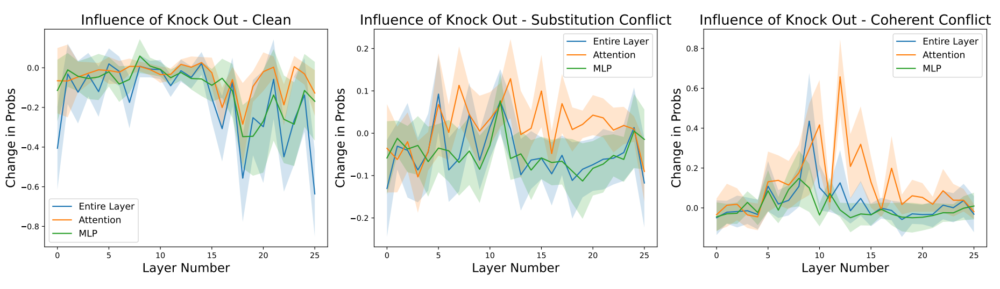
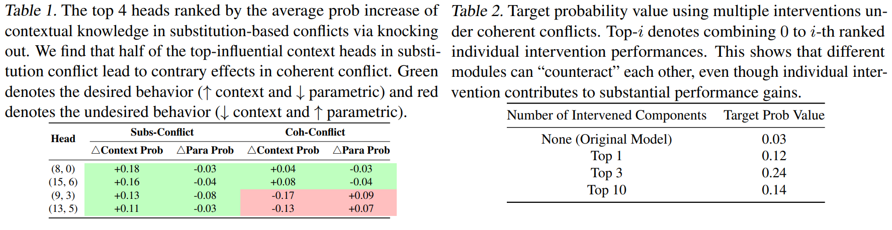
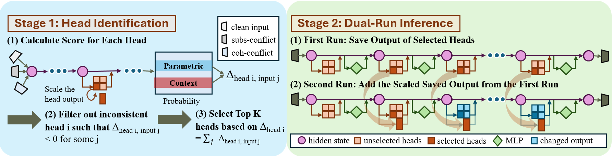

Language Models (LMs) often encounter knowledge conflicts when parametric memory contradicts contextual knowledge. Previous works attribute this conflict to the interplay between "memory heads" and "context heads", attention heads assumed to promote either memory or context exclusively. In this study, we go beyond this fundamental assumption by uncovering a critical phenomenon we term the superposition of contextual information and parametric memory (CP superposition), where highly influential attention heads simultaneously contribute to both memory and context. Building upon this insight, we propose Just Run Twice (JUICE), a test-time attention intervention method that steers LMs toward either parametric beliefs or contextual knowledge without requiring fine-tuning. JUICE identifies a set of reliable attention heads and leverages a dual-run approach to mitigate the superposition effects. Extensive experiments across 11 datasets and 6 model architectures demonstrate that JUICE sets the new state-of-the-art performance and robust generalization, achieving significant and consistent improvement across different domains under various conflict types. Finally, we theoretically analyze knowledge conflict and CP superposition in attention heads, which further elucidates the effectiveness of JUICE in these settings.




@article{li2025taming,
title={Taming Knowledge Conflicts in Language Models},
author={Li, Gaotang and Chen, Yuzhong and Tong, Hanghang},
journal={arXiv preprint arXiv:2503.10996},
year={2025}
}